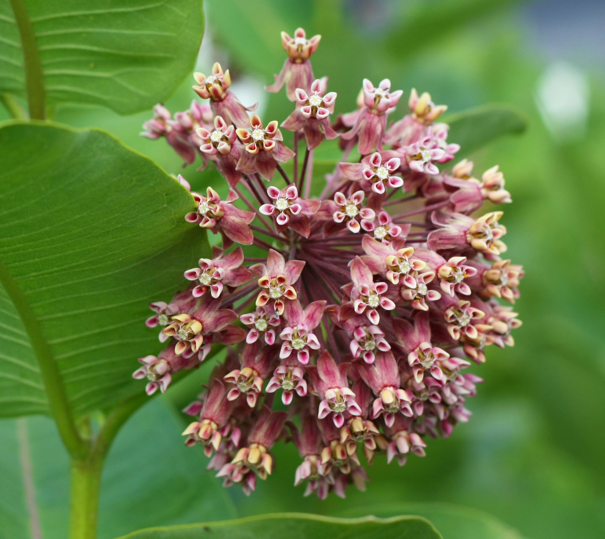

Dog-strangaling vine

Description:
The leaves are ovate in shape with entire margings. Pinnate and simple with an opposite stem arrangment. The stem is vine like with a woody base. The flowers are marroon/pink with 5 petals. The fruit are bean shaped pods that are brown when mature.
How to get rid of it?
Cut the vines off and remove them from what they are wrapped around. Then dig up the base of the plant ensuring the whole root is removed.
What to replace it with?
Golden Alexander is a great alternative that is great for native pollinators.